המגע שלי זה היופי שלכם My touch is your beauty
סימה בסקין, ספרית כלבים וחתולים בקריית טבעון ובחיפה. Sima Beskin grooms dogs and cats in Kiryat Tivon and Haifa.
4.9 בגוגל, מתוך 42 ביקורותon Google, from 42 reviews
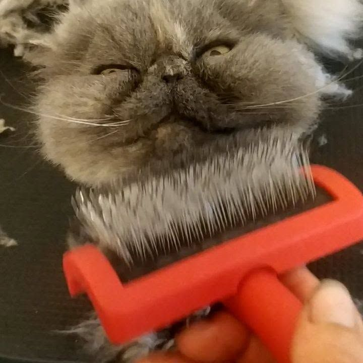
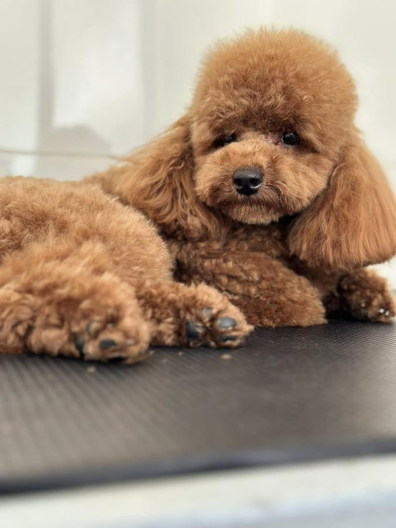
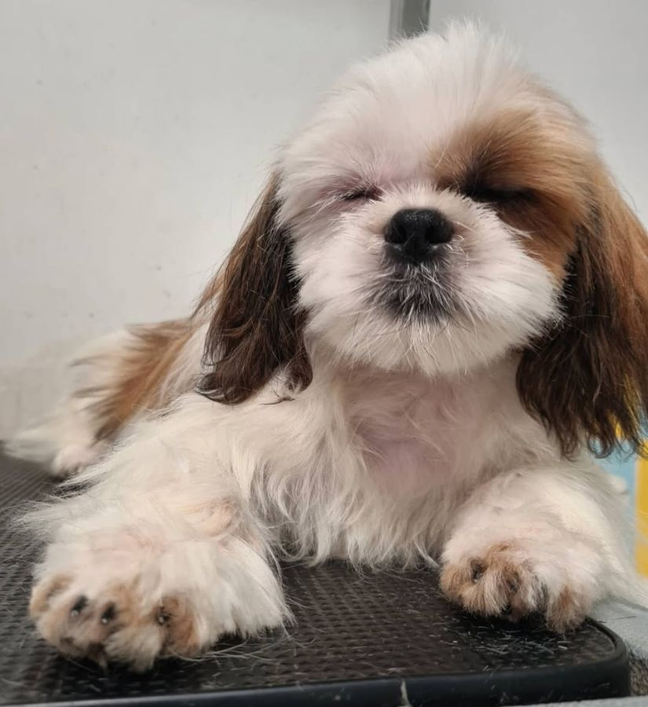
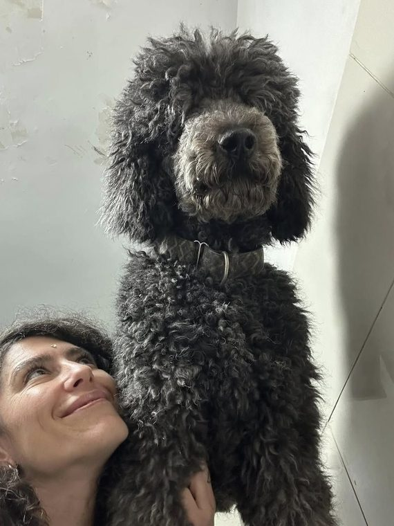
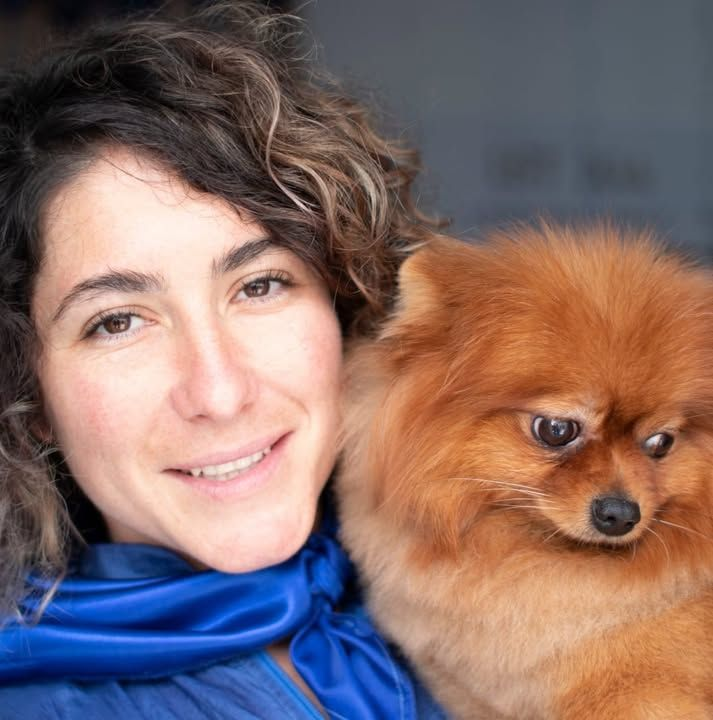
הכירו את סימה.Meet Sima.
ספרית כלבים וחתולים, בתוך חנות החיות בזבולון 1.A dog and cat groomer, inside the pet shop at 1 Zevulun St.
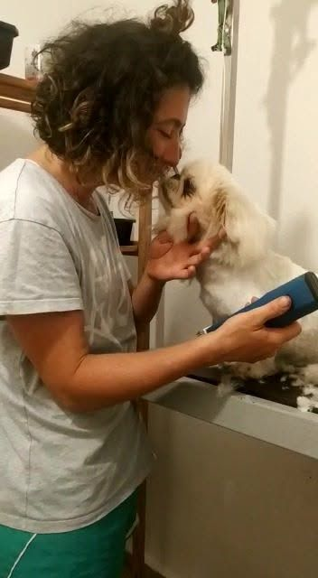
״כמה שאני אוהבת את העבודה שלי״“How much I love my work”
4.9
בגוגל, מתוך 42 ביקורותon Google, from 42 reviews
2016
מאז כותבים עליה ביקורות. ו־30 המלצות בפייסבוק.reviews since then, and 30 recommendations on Facebook.
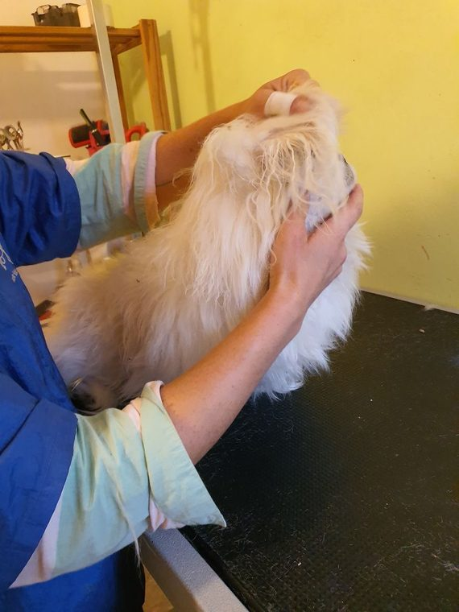
בלי רצועה. בגובה של הכלב.No leash. At the dog’s height.
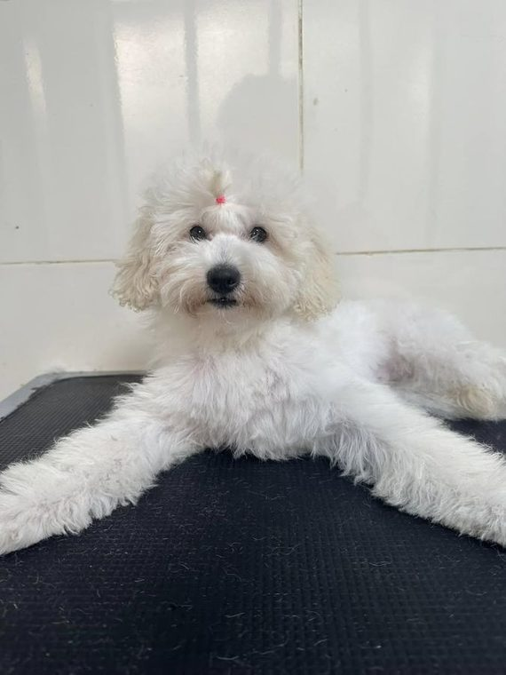
מסבך לפרווה רכהFrom tangle to soft coat
פרווה שנדחסה לקשרים, ועוד קצת מהשטח של טבעון בפנים.A coat pressed into knots, with a little of Tivon’s outdoors caught inside. מסרקים לאט, שורה אחרי שורה, עד שהקשר משתחרר.Combed slowly, row by row, until each knot lets go. מים, שמפו עד העור, ושטיפה עד שהקצף יורד. נסו לפוצץ בועה.Water, shampoo down to the skin, and a rinse until the lather is gone. Try popping a bubble. ייבוש מצד לצד, והפרווה מתרוממת.Dried from side to side, and the coat lifts. ובסוף המספריים: קו אחד רך מסביב לכלב.Last, the scissors: one soft line around the dog.
העבירו את העכבר על הפרווה כדי לסרקהחליקו הצידה על הפרווה כדי לסרקRun your mouse over the coat to comb itSwipe sideways across the coat to comb it
0 / 0 קשרים נפתחוknots worked out
איור להמחשהIllustrationלפני ואחריBefore and after
גררו את המסרק על התמונה.Drag the comb across the photo.
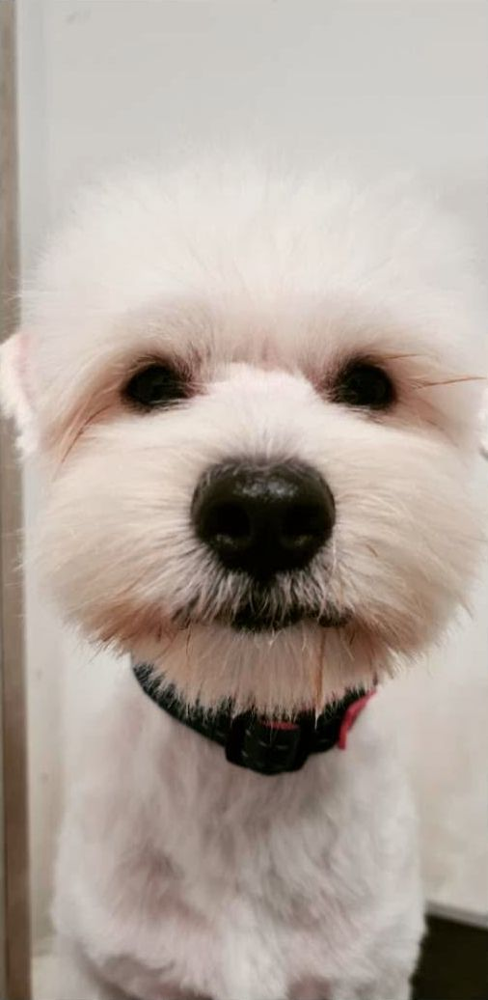
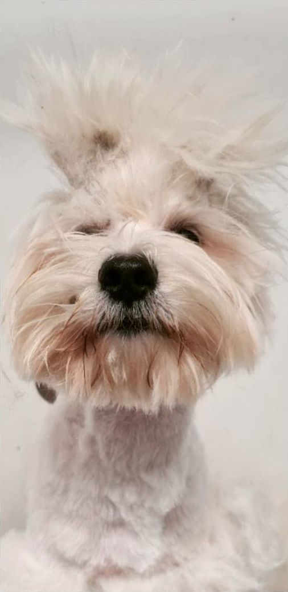
לפניBeforeאחריAfter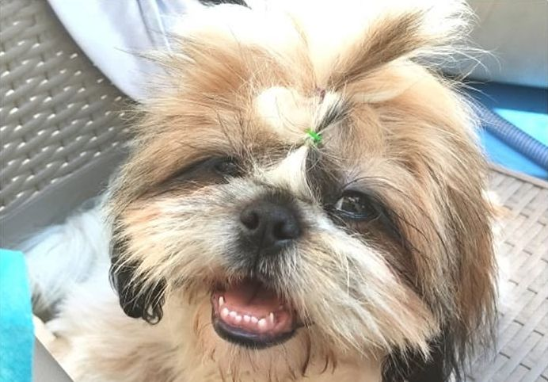
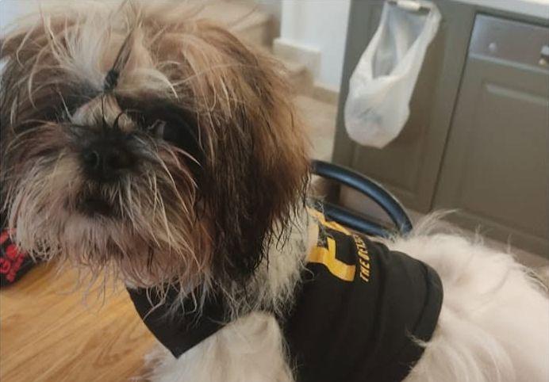
לפניBeforeאחריAfter- טיפול יופיBeauty groom
- סירוקBrushing
- פתיחת קשריםDe-matting
- מריטהHand-stripping
- דילולThinning
- תספורתHaircut
- תספורות גזעBreed cuts
- תספורת ביתEasy-care home cut
- טיפול גוריםPuppy care
- מסכות לפרווהCoat masks
- קיצוץ ציפורנייםNail trims
- ריקון בלוטותAnal glands
מה שתלוי על המקררWhat’s on the fridge
הכלבים אחרי סימה, ומה שכתבו בעליהם. הקישו על תמונה כדי להרים אותה.The dogs after Sima, and what their people wrote. Tap a photo to pick it up.
״כבר שמונה שנים שאני מספר את הכלבה שלי רק אצל סימה. סימה מאוד מקצועית, אמינה, אוהבת חיות ורואים את זה בכל תספורת.״
“For eight years I’ve had my dog groomed only by Sima. Very professional, reliable, loves animals, and you can see it in every haircut.”
4.9
בגוגל, מתוך 42 ביקורות. הציטוטים מקוצרים.on Google, from 42 reviews. Quotes shortened, translated from Hebrew.
״סימה סימה סימה. האחת והיחידה. Free spirit מיוחדת מלאת אנרגיה כמו כדור אש. ספרית סופר מקצועית.״
“Sima Sima Sima. The one and only. A special free spirit, full of energy like a fireball. A super-professional groomer.”
״סימה מאוד חברותית ואדיבה ועדינה ומאוד מקצועית עם חיות, ומקס לא עשתה בעיות בכלל.״
“Sima is very friendly, kind and gentle, and very professional with animals, and Max gave no trouble at all.”
״טיפלה במסירות ובמקצועיות בכלבה ופינקה בתספורת מהממת… יצאנו מרוצים עד אין קץ וכך גם הכלבה שלנו.״
“She cared for our dog with devotion and skill and spoiled her with a gorgeous cut… We left endlessly happy, and so did our dog.”
״מספרה מהממת, ספרית מקצועית ומאוד אדיבה. חוויה מעולה לבעלי החיים וגם לבעליו.״
“A gorgeous grooming salon, a professional and very kind groomer. A great experience for the animals, and for their owners too.”
שאלות טובותGood questions
״יש לכם שאלה? רוצים להתייעץ? אל תתביישו להתקשר״, כותבת סימה.“Got a question? Want advice? Don’t be shy, call,” Sima writes (translated).
גם חתולים?Cats too?
כן. סימה מספרת כלבים וחתולים, וכל חיה פרוותית.Yes. Sima grooms dogs and cats, and any furry animal.
הכלב שלי לחוץ, או לא אוהב שנוגעים בו.My dog gets nervous, or hates being touched.
אצל סימה לא קושרים את הכלב לשולחן. קודם מכירים, ואם צריך, יורדים איתו לרצפה. ספרו לה עליו מראש בדרכון שלמטה.At Sima’s the dog isn’t tied to the table. They get acquainted first, and if needed she gets down on the floor with him. Tell her about him ahead of time with the passport below.
מה זה ״תספורת בית״?What’s an “easy-care home cut”?
תספורת שנוחה לחיים בבית. לטרייר, למשל, סימה עושה מריטה של שכבת הפרווה המשנית, ואחר כך מסדרת במכונה ובמספריים.A cut that’s easy to live with at home. For a terrier, for example, Sima strips the undercoat first, then tidies up with clippers and scissors.
כל כמה זמן לעשות מריטה?How often should a dog be hand-stripped?
לכלבים שלא משתתפים בתערוכות, סימה ממליצה על מריטה פעמיים בשנה.For dogs that don’t go to shows, Sima recommends stripping twice a year.
איך קובעים תור?How do I book?
בטלפון 054-214-4205, או בהודעה בוואטסאפ.By phone at 054-214-4205, or a WhatsApp message.
איפה זה?Where is it?
בתוך חנות החיות בזבולון 1, קריית טבעון.Inside the pet shop at 1 Zevulun St., Kiryat Tivon.
בואו להכירCome and meet
זבולון 1, קריית טבעון. סימה עובדת בתוך חנות החיות.1 Zevulun St., Kiryat Tivon. Sima works inside the pet shop.
זבולון 1, קריית טבעון (בתוך חנות החיות)1 Zevulun St., Kiryat Tivon (inside the pet shop)